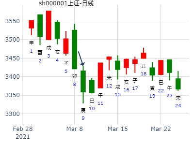

占事：0002657 年度走势 排卦：元亨利贞网六爻在线排盘系统
公历起卦时间：2014年1月30日17时23分 (手工指定)
干支：癸巳年 乙丑月 辛丑日 丁酉时 （日空：辰巳）
震宫：雷地豫 (六合) 震宫：雷水解
六神 伏神 本 卦 变 卦
腾蛇 妻财庚戌土 ▅▅ ▅▅ 妻财庚戌土 ▅▅ ▅▅
勾陈 官鬼庚申金 ▅▅ ▅▅ 官鬼庚申金 ▅▅ ▅▅ 应
朱雀 子孙庚午火 ▅▅▅▅▅ 应 子孙庚午火 ▅▅▅▅▅
青龙 兄弟乙卯木 ▅▅ ▅▅ 子孙戊午火 ▅▅ ▅▅
玄武 子孙乙巳火 ▅▅ ▅▅ ╳→ 妻财戊辰土 ▅▅▅▅▅ 世
白虎 父母庚子水 妻财乙未土 ▅▅ ▅▅ 世 兄弟戊寅木 ▅▅ ▅▅
财旺并子孙发动生财，全年为上涨趋势。
辰巳空，子孙空，一开始不管用（后来停牌直到申月出放出来）
一是出空，二是动而逢合的申月大涨。酉月也大涨。
亥月暴涨，因为冲空。子月大跌，子孙月破，父母出伏。
。
占事：教授----南宁糖业短线趋势 方式：手工指定
公历：2015年1月21日10时59分 星期三 北京时间
干支：甲午年 丁丑月 丁酉日 乙巳时 旬空：辰巳 申酉 （辰巳） 寅卯
时间: 2015-01-21
干支: 甲午年丁丑月丁酉日 (旬空: 辰巳 )
雷地豫 雷水解
六神 伏神 本 卦 变 卦
青龙 ▅▅ ▅▅ 妻财戌土 ▅▅ ▅▅ 妻财戌土
玄武 ▅▅ ▅▅ 官鬼申金 ▅▅ ▅▅ 官鬼申金 应
白虎 ▅▅▅▅▅ 子孙午火 应 ▅▅▅▅▅ 子孙午火
腾蛇 ▅▅ ▅▅ 兄弟卯木 ▅▅ ▅▅ 子孙午火
勾陈 ▅▅ ▅▅ 子孙巳火 Ｘ→ ▅▅▅▅▅ 妻财辰土 世
朱雀 父母子水▅▅ ▅▅ 妻财未土 世 ▅▅ ▅▅ 兄弟寅木
马后炮：世爻月破，辰巳空，到第二轮辰巳空才开涨。
且巳酉丑易合官局而泄。
丙申年实战开卦钱景如何（兼实战测试贴）--自动起卦(起卦方式)
占问事宜：丙申年实战钱景如何
公历：2016年1月12日16时51分，星期二。
神煞：驿马-亥 桃花-午 干禄-子 贵人-卯、巳
干支：乙未年 己丑月 癸巳日 庚申时 (卦身：申)
主变卦 雷地豫(震宫) 之 雷水解(震宫) [空亡:午、未]
螣蛇 ▅▅ ▅▅ 妻财庚戌土 ▅▅ ▅▅ 妻财庚戌土
勾陈 ▅▅ ▅▅ 官鬼庚申金 ▅▅ ▅▅ 官鬼庚申金 应
朱雀 ▅▅▅▅▅ 子孙庚午火 应 ▅▅▅▅▅ 子孙庚午火
青龙 ▅▅ ▅▅ 兄弟乙卯木 ▅▅ ▅▅ 子孙戊午火
玄武 ▅▅ ▅▅×子孙乙巳火 ▅▅▅▅▅ 妻财戊辰土 世
白虎 父母庚子水 ▅▅ ▅▅ 妻财乙未土 世 ▅▅ ▅▅ 兄弟戊寅木
癸巳年第一轮实战卦
[hide=2000,1]占问事宜：买丰东股份（002530）可赚钱否？
公历：2013年2月15日16时2分，星期五。
干支：癸巳年 甲寅月 壬子日 戊申时 (卦身：午)
主变卦 雷地豫(震宫) 之 雷水解(震宫) [空亡:寅、卯]
白虎 ▅▅ ▅▅ 妻财庚戌土 ▅▅ ▅▅ 妻财庚戌土
螣蛇 ▅▅ ▅▅ 官鬼庚申金 ▅▅ ▅▅ 官鬼庚申金 应
勾陈 ▅▅▅▅▅ 子孙庚午火 应 ▅▅▅▅▅ 子孙庚午火
朱雀 ▅▅ ▅▅ 兄弟乙卯木 ▅▅ ▅▅ 子孙戊午火
青龙 ▅▅ ▅▅×子孙乙巳火 ▅▅▅▅▅ 妻财戊辰土 世
玄武 父母庚子水 ▅▅ ▅▅ 妻财乙未土 世 ▅▅ ▅▅ 兄弟戊寅木
超短线，快、准、狠，挂单都犹豫不决，错失良机！
震宫：雷地豫 (六合) 震宫：雷水解
六神 伏神 本 卦 变 卦
青龙 妻财庚戌土 ▅▅ ▅▅ 妻财庚戌土 ▅▅ ▅▅
玄武 官鬼庚申金 ▅▅ ▅▅ 官鬼庚申金 ▅▅ ▅▅ 应
白虎 子孙庚午火 ▅▅▅▅▅ 应 子孙庚午火 ▅▅▅▅▅
螣蛇 兄弟乙卯木 ▅▅ ▅▅ 子孙戊午火 ▅▅ ▅▅
勾陈 子孙乙巳火 ▅▅ ▅▅ ╳→ 妻财戊辰土 ▅▅▅▅▅ 世
朱雀 父母庚子水 妻财乙未土 ▅▅ ▅▅ 世 兄弟戊寅木 ▅▅ ▅▅
时间: 2020-02-19
干支: 庚子年戊寅月壬辰日 (旬空: 午未 )
雷地豫 雷水解
六神 伏神 本 卦 变 卦
白虎 ▅▅ ▅▅ 妻财戌土 ▅▅ ▅▅ 妻财戌土
腾蛇 ▅▅ ▅▅ 官鬼申金 ▅▅ ▅▅ 官鬼申金 应
勾陈 ▅▅▅▅▅ 子孙午火 应 ▅▅▅▅▅ 子孙午火
朱雀 ▅▅ ▅▅ 兄弟卯木 ▅▅ ▅▅ 子孙午火
青龙 ▅▅ ▅▅ 子孙巳火 Ｘ→ ▅▅▅▅▅ 妻财辰土 世
玄武 父母子水▅▅ ▅▅ 妻财未土 世 ▅▅ ▅▅ 兄弟寅木
利建侯行师。
初六：鸣豫，凶。
六二：介于石，不终日，贞吉。
T-Z-D上证指数擂台赛第八场第2局（2020年2月25日）Z方
公历起卦时间：2020年2月25日9时3分 (手工指定)
干支：庚子年 戊寅月 戊戌日 丁巳时 （日空：辰巳）
神煞：驿马－申 桃花－卯 日禄－巳 贵人－丑，未
震宫：雷地豫 (六合) 震宫：雷水解
六神 伏神 本 卦 变 卦
朱雀 妻财庚戌土 ▅▅ ▅▅ 妻财庚戌土 ▅▅ ▅▅
青龙 官鬼庚申金 ▅▅ ▅▅ 官鬼庚申金 ▅▅ ▅▅ 应
玄武 子孙庚午火 ▅▅▅▅▅ 应 子孙庚午火 ▅▅▅▅▅
白虎 兄弟乙卯木 ▅▅ ▅▅ 子孙戊午火 ▅▅ ▅▅
螣蛇 子孙乙巳火 ▅▅ ▅▅ ╳→ 妻财戊辰土 ▅▅▅▅▅ 世
勾陈 父母庚子水 妻财乙未土 ▅▅ ▅▅ 世 兄弟戊寅木 ▅▅ ▅▅
占事：512400_有色ETF_2024年走势--风生水起
时间: 2024-02-10 10:14
干支: 甲辰年丙寅月甲辰日 (旬空: 寅卯 )
雷地豫 雷水解
六神 伏神 本 卦 变 卦
玄武 ▅▅ ▅▅ 妻财戌土 ▅▅ ▅▅ 妻财戌土
白虎 ▅▅ ▅▅ 官鬼申金 ▅▅ ▅▅ 官鬼申金 应
腾蛇 ▅▅▅▅▅ 子孙午火 应 ▅▅▅▅▅ 子孙午火
勾陈 ▅▅ ▅▅ 兄弟卯木 ▅▅ ▅▅ 子孙午火
朱雀 ▅▅ ▅▅ 子孙巳火 Ｘ→ ▅▅▅▅▅ 妻财辰土 世
青龙 父母子水▅▅ ▅▅ 妻财未土 世 ▅▅ ▅▅ 兄弟寅木
上证2025年整体行情如何？王自动卦
时间: 2025-02-09 11时30分
干支: 乙巳年戊寅月己酉日 (旬空: 寅卯 )
雷地豫 雷水解
六神 伏神 本 卦 变 卦
勾陈 ▅▅ ▅▅ 妻财戌土 ▅▅ ▅▅ 妻财戌土
朱雀 ▅▅ ▅▅ 官鬼申金 ▅▅ ▅▅ 官鬼申金 应
青龙 ▅▅▅▅▅ 子孙午火 应 ▅▅▅▅▅ 子孙午火
玄武 ▅▅ ▅▅ 兄弟卯木 ▅▅ ▅▅ 子孙午火
白虎 ▅▅ ▅▅ 子孙巳火 Ｘ→ ▅▅▅▅▅ 妻财辰土 世
腾蛇 父母子水▅▅ ▅▅ 妻财未土 世 ▅▅ ▅▅ 兄弟寅木
暴涨卦：卯月豫之解，子化财。占大盘到下周末。3月第3周。.md
时间: 2015-03-12
干支: 乙未年己卯月丁亥日 (旬空: 午未 )
雷地豫 雷水解
六神 伏神 本 卦 变 卦
青龙 ▅▅ ▅▅ 妻财戌土 ▅▅ ▅▅ 妻财戌土
玄武 ▅▅ ▅▅ 官鬼申金 ▅▅ ▅▅ 官鬼申金 应
白虎 ▅▅▅▅▅ 子孙午火 应 ▅▅▅▅▅ 子孙午火
腾蛇 ▅▅ ▅▅ 兄弟卯木 ▅▅ ▅▅ 子孙午火
勾陈 ▅▅ ▅▅ 子孙巳火 Ｘ→ ▅▅▅▅▅ 妻财辰土 世
朱雀 父母子水▅▅ ▅▅ 妻财未土 世 ▅▅ ▅▅ 兄弟寅木
利建侯行师。六二：介于石，不终日，贞吉。一路暴涨。
占事：002668奥马电器未来三个月走势？
公历起卦时间：2015年3月12日23时58分 (在线摇卦)
干支：乙未年 己卯月 戊子日 壬子时 （日空：午未）
震宫：雷地豫 (六合) 震宫：雷水解
六神 伏神 本 卦 变 卦
朱雀 妻财庚戌土 ▅▅ ▅▅ 妻财庚戌土 ▅▅ ▅▅
青龙 官鬼庚申金 ▅▅ ▅▅ 官鬼庚申金 ▅▅ ▅▅ 应
玄武 子孙庚午火 ▅▅▅▅▅ 应 子孙庚午火 ▅▅▅▅▅
白虎 兄弟乙卯木 ▅▅ ▅▅ 子孙戊午火 ▅▅ ▅▅
腾蛇 子孙乙巳火 ▅▅ ▅▅ ╳→ 妻财戊辰土 ▅▅▅▅▅ 世
勾陈 父母庚子水 妻财乙未土 ▅▅ ▅▅ 世 兄弟戊寅木 ▅▅ ▅▅
参照李炎的卦。经典：豫之解，测2014年下半年，或午月到2015年丑月，沪深300K线趋势（李炎）
祁连山到4.3日升跌11.75
2015年3月30日10时50分
干 支：乙未年 己卯月 乙巳日 辛巳时
旬 空：辰巳 申酉 寅卯 申酉
主雷地豫（六合） 震宫：雷水解
玄武 ▄▄ ▄▄ 妻财庚戌土 ▄▄ ▄▄ 妻财庚戌土
白虎 ▄▄ ▄▄ 官鬼庚申金 ▄▄ ▄▄ 官鬼庚申金 应
螣蛇 ▄▄▄▄▄ 子孙庚午火 应 ▄▄▄▄▄ 子孙庚午火
勾陈 ▄▄ ▄▄ 兄弟乙卯木 ▄▄ ▄▄ 子孙戊午火
朱雀 ▄▄ ▄▄ 子孙乙巳火 × ▄▄▄▄▄ 妻财戊辰土 世
青龙 父母庚子水 ▄▄ ▄▄ 妻财乙未土 世 ▄▄ ▄▄ 兄弟戊寅木
吉祥如意-每日大盘卦！
求测内容：3月9日走势？
公历：2020年03月06日09时06分
四柱：庚子年 己卯月 戊申日 丁巳时 (日空：寅卯)
卦名：震宫1世六合卦：雷地豫 之 震宫2世卦：雷水解
卦身：主卦未爻持世，卦身在二爻；阴爻持世，月卦身在午
朱雀 ▅ ▅ 妻财庚戌土 ▅ ▅ 妻财庚戌土
青龙 ▅ ▅ 官鬼庚申金 ▅ ▅ 官鬼庚申金 应
玄武 ▅▅▅ 子孙庚午火 应 ▅▅▅ 子孙庚午火
白虎 ▅ ▅ 兄弟乙卯木 ▅ ▅ 子孙戊午火
螣蛇 ▅ ▅ 子孙乙巳火 ×→ ▅▅▅ 妻财戊辰土 世
勾陈 父母庚子水 ▅ ▅ 妻财乙未土 世 ▅ ▅ 兄弟戊寅木
涨 下午出最高点 预测错误，实际大盘大跌3.01%
3.11涨的概率大
辛丑 辛卯 丙辰 癸巳 (子丑空) 辛丑年正月廿六(2021/03/09 10:42:08)
雷地豫 雷水解
青龙 妻财戌土 ∥ 妻财戌土 ∥
玄武 官鬼申金 ∥ 官鬼申金 ∥ 应
白虎 子孙庚午 ／ 应 子孙庚午 ／
腾蛇 兄弟卯木 ∥ 子孙午火 ∥
勾陈 子孙乙巳 × 妻财辰土 ／ 世
父母子水：朱雀 妻财未土 ∥ 世 兄弟寅木 ∥

出生：2021 年 性别：男 占事：江西铜业3.16收盘走势
排卦：元亨利贞网六爻在线排盘系统 https://www.china95.net
公历起卦时间：2021年3月16日10时26分 (电脑自动)
干支：辛丑年 辛卯月 癸亥日 丁巳时 （日空：子丑）
震宫：雷地豫 (六合) 震宫：雷水解
六神 伏神 本 卦 变 卦
白虎 妻财庚戌土 ▅▅ ▅▅ 妻财庚戌土 ▅▅ ▅▅
螣蛇 官鬼庚申金 ▅▅ ▅▅ 官鬼庚申金 ▅▅ ▅▅ 应
勾陈 子孙庚午火 ▅▅▅▅▅ 应 子孙庚午火 ▅▅▅▅▅
朱雀 兄弟乙卯木 ▅▅ ▅▅ 子孙戊午火 ▅▅ ▅▅
青龙 子孙乙巳火 ▅▅ ▅▅ ╳→ 妻财戊辰土 ▅▅▅▅▅ 世c ln
玄武 父母庚子水 妻财乙未土 ▅▅ ▅▅ 世 兄弟戊寅木 ▅▅ ▅▅

万东医疗3月涨跌。豫之解。
2022年3月4日12时11分 (在线摇卦) 晖
干支：壬寅年 壬寅月 丙辰日 甲午时 （日空：子丑）
神煞：驿马－寅 桃花－酉 日禄－巳 贵人－酉，亥
震宫：雷地豫 (六合) 震宫：雷水解
六神 伏神 本 卦 变 卦
青龙 妻财庚戌土 ▅▅ ▅▅ 妻财庚戌土 ▅▅ ▅▅
玄武 官鬼庚申金 ▅▅ ▅▅ 官鬼庚申金 ▅▅ ▅▅ 应
白虎 子孙庚午火 ▅▅▅▅▅ 应 子孙庚午火 ▅▅▅▅▅
螣蛇 兄弟乙卯木 ▅▅ ▅▅ 子孙戊午火 ▅▅ ▅▅
勾陈 子孙乙巳火 ▅▅ ▅▅ ╳→ 妻财戊辰土 ▅▅▅▅▅ 世
朱雀 父母庚子水 妻财乙未土 ▅▅ ▅▅ 世 兄弟戊寅木 ▅▅ ▅▅
六二：介于石，不终日，贞吉。象曰：不终日，贞吉；以中正也。
戌土日破。


今日上证指数行情
起卦方式：网上摇卦
起卦时间：2011年05月13日10时57分
干支：辛卯年 癸巳月 戊辰日 丁巳时
旬空：午未 午未 戌亥 子丑
六神 伏神 震宫：雷地豫（六合） 震宫：雷水解
【本 卦】 【变 卦】
朱雀 ▅▅ ▅▅ 妻财庚戌土 ▅▅ ▅▅ 妻财庚戌土
青龙 ▅▅ ▅▅ 官鬼庚申金 ▅▅ ▅▅ 官鬼庚申金 应
玄武 ▅▅▅▅▅ 子孙庚午火 应 ▅▅▅▅▅ 子孙庚午火
白虎 ▅▅ ▅▅ 兄弟乙卯木 ▅▅ ▅▅ 子孙戊午火
滕蛇 ▅▅ ▅▅ 子孙乙巳火 ×→ ▅▅▅▅▅ 妻财戊辰土 世
勾陈 父母庚子水 ▅▅ ▅▅ 妻财乙未土 世 ▅▅ ▅▅ 兄弟戊寅木

豫之解，2014午月到2015年丑月，沪深300K线趋势（李炎）
公历起卦时间：2014年5月21日15时17分 (手工指定)
干支：甲午年 己巳月 壬辰日 戊申时 （日空：午未）
震宫：雷地豫 (六合) 震宫：雷水解
六神 伏神 本 卦 变 卦
白虎 妻财庚戌土 ▅▅ ▅▅ 妻财庚戌土 ▅▅ ▅▅
腾蛇 官鬼庚申金 ▅▅ ▅▅ 官鬼庚申金 ▅▅ ▅▅ 应
勾陈 子孙庚午火 ▅▅▅▅▅ 应 子孙庚午火 ▅▅▅▅▅
朱雀 兄弟乙卯木 ▅▅ ▅▅ 子孙戊午火 ▅▅ ▅▅
青龙 子孙乙巳火 ▅▅ ▅▅ ╳→ 妻财戊辰土 ▅▅▅▅▅ 世
玄武 父母庚子水 妻财乙未土 ▅▅ ▅▅ 世 兄弟戊寅木 ▅▅ ▅▅
此卦起卦日月正好分别为动爻变爻。故得大涨。
参考李炎的鼎之遁。
李炎断语：
财持世虽空，旺而不空，子孙巳火发动化财，大涨
午月子孙出空合世财，大涨 （王注：午出空不动也没用）
未月财临月大涨 （未出空，则能受生，大涨）
申月官合住动爻，泄财，下跌 （申月动而逢合，可以是应期也可以是月绊了）
酉月兄弟月破但泄财，区间震荡，涨跌不大
戌月财临月上涨 （戌月戌财旺，辰财月破，震荡，十字星为主）
亥月子孙巳火月破，下跌 （同意）
子月子孙午火月破，但水土旺于子，区间震荡，涨跌不大
丑月财值月，上涨
600737中粮屯河下周走势？
干支：乙未年 壬午月 乙亥日 乙酉时 （日空：申酉）
神煞：驿马－巳 桃花－子 日禄－卯 贵人－子，申
震宫：雷地豫 (六合) 震宫：雷水解
六神 伏神 本 卦 变 卦
玄武 妻财庚戌土 ▅▅ ▅▅ 妻财庚戌土 ▅▅ ▅▅
白虎 官鬼庚申金 ▅▅ ▅▅ 官鬼庚申金 ▅▅ ▅▅ 应
腾蛇 子孙庚午火 ▅▅▅▅▅ 应 子孙庚午火 ▅▅▅▅▅
勾陈 兄弟乙卯木 ▅▅ ▅▅ 子孙戊午火 ▅▅ ▅▅
朱雀 子孙乙巳火 ▅▅ ▅▅ ╳→ 妻财戊辰土 ▅▅▅▅▅ 世
青龙 父母庚子水 妻财乙未土 ▅▅ ▅▅ 世 兄弟戊寅木 ▅▅ ▅▅
子孙被日辰冲飞，哪怕在午月也是跌。
测6月10日到14日上证-李燚
时间: 2019-06-06
干支: 己亥年庚午月甲戌日 (旬空: 申酉 )
雷地豫 雷水解
六神 伏神 本 卦 变 卦
玄武 ▅▅ ▅▅ 妻财戌土 ▅▅ ▅▅ 妻财戌土
白虎 ▅▅ ▅▅ 官鬼申金 ▅▅ ▅▅ 官鬼申金 应
腾蛇 ▅▅▅▅▅ 子孙午火 应 ▅▅▅▅▅ 子孙午火
勾陈 ▅▅ ▅▅ 兄弟卯木 ▅▅ ▅▅ 子孙午火
朱雀 ▅▅ ▅▅ 子孙巳火 Ｘ→ ▅▅▅▅▅ 妻财辰土 世
青龙 父母子水▅▅ ▅▅ 妻财未土 世 ▅▅ ▅▅ 兄弟寅木
0609 热门股之周易解读
出生：2020 年 性别：男 占事：603353
排卦：元亨利贞网六爻在线排盘系统 https://www.china95.net
公历起卦时间：2020年6月9日8时41分 (在线摇卦)
干支：庚子年 壬午月 癸未日 丙辰时 （日空：申酉）
震宫：雷地豫 (六合) 震宫：雷水解
六神 伏神 本 卦 变 卦
白虎 妻财庚戌土 ▅▅ ▅▅ 妻财庚戌土 ▅▅ ▅▅
螣蛇 官鬼庚申金 ▅▅ ▅▅ 官鬼庚申金 ▅▅ ▅▅ 应
勾陈 子孙庚午火 ▅▅▅▅▅ 应 子孙庚午火 ▅▅▅▅▅
朱雀 兄弟乙卯木 ▅▅ ▅▅ 子孙戊午火 ▅▅ ▅▅
青龙 子孙乙巳火 ▅▅ ▅▅ ╳→ 妻财戊辰土 ▅▅▅▅▅ 世
玄武 父母庚子水 妻财乙未土 ▅▅ ▅▅ 世 兄弟戊寅木 ▅▅ ▅▅
大涨
出生：2020 年 性别：男 占事：002400
排卦：元亨利贞网六爻在线排盘系统
公历起卦时间：2020年6月9日8时53分 (在线摇卦)
干支：庚子年 壬午月 癸未日 丙辰时 （日空：申酉）
神煞：驿马－巳 桃花－子 日禄－子 贵人－卯，巳
离宫：风水涣 离宫：风水涣
六神 伏神 本 卦 变 卦
白虎 父母辛卯木 ▅▅▅▅▅ 父母辛卯木 ▅▅▅▅▅
螣蛇 兄弟辛巳火 ▅▅▅▅▅ 世 兄弟辛巳火 ▅▅▅▅▅ 世
勾陈 妻财己酉金 子孙辛未土 ▅▅ ▅▅ 子孙辛未土 ▅▅ ▅▅
朱雀 官鬼己亥水 兄弟戊午火 ▅▅ ▅▅ 兄弟戊午火 ▅▅ ▅▅
青龙 子孙戊辰土 ▅▅▅▅▅ 应 子孙戊辰土 ▅▅▅▅▅ 应
玄武 父母戊寅木 ▅▅ ▅▅ 父母戊寅木 ▅▅ ▅▅
下午上涨。。
丽珠614周卦，豫之解（天同），动态旬空妙用.md
时间: 2021-06-14
干支: 辛丑年甲午月癸巳日 (旬空: 午未 )
雷地豫 雷水解
六神 伏神 本 卦 变 卦
白虎 ▅▅ ▅▅ 妻财戌土 ▅▅ ▅▅ 妻财戌土
腾蛇 ▅▅ ▅▅ 官鬼申金 ▅▅ ▅▅ 官鬼申金 应
勾陈 ▅▅▅▅▅ 子孙午火 应 ▅▅▅▅▅ 子孙午火
朱雀 ▅▅ ▅▅ 兄弟卯木 ▅▅ ▅▅ 子孙午火
青龙 ▅▅ ▅▅ 子孙巳火 Ｘ→ ▅▅▅▅▅ 妻财辰土 世
玄武 父母子水▅▅ ▅▅ 妻财未土 世 ▅▅ ▅▅ 兄弟寅木
摇卦后，立马进入甲午旬，辰巳变旬空。动爻无法作用。
子日冲午火暗动，生世。大涨4.87%差点。
卯日受大盘影响跌。25日辰日出空即大涨6.99%
RQ上证6.10甲午五-6.17辛丑五共6日哪日顶？哪日顶？liur-ganwxn
求测人：某人，男，庚午(1990年)，自动起卦(起卦方式)
公历：2022年6月12日14时26分，星期日。
干支：壬寅年 丙午月 丙申日 乙未时 [空亡:辰、巳]
主变卦 雷地豫(震宫) 之 雷水解(震宫)
青龙 ▅▅ ▅▅ 妻财庚戌土 ▅▅ ▅▅ 妻财庚戌土
玄武 ▅▅ ▅▅ 官鬼庚申金 ▅▅ ▅▅ 官鬼庚申金 应
白虎 ▅▅▅▅▅ 子孙庚午火 应 ▅▅▅▅▅ 子孙庚午火
螣蛇 ▅▅ ▅▅ 兄弟乙卯木 ▅▅ ▅▅ 子孙戊午火
勾陈 ▅▅ ▅▅×子孙乙巳火 ▅▅▅▅▅ 妻财戊辰土 世
朱雀 父母庚子水 ▅▅ ▅▅ 妻财乙未土 世 ▅▅ ▅▅ 兄弟戊寅木
注释：动变旬空，逢冲之日涨。

000933近期走势。豫之解。子化财。2014年7月25日测。
时间: 2014-07-25
干支: 甲午年辛未月丁酉日丁未时 (旬空: 辰巳 )
雷地豫 雷水解
六神 伏神 本 卦 变 卦
青龙 ▅▅ ▅▅ 妻财戌土 ▅▅ ▅▅ 妻财戌土
玄武 ▅▅ ▅▅ 官鬼申金 ▅▅ ▅▅ 官鬼申金 应
白虎 ▅▅▅▅▅ 子孙午火 应 ▅▅▅▅▅ 子孙午火
腾蛇 ▅▅ ▅▅ 兄弟卯木 ▅▅ ▅▅ 子孙午火
勾陈 ▅▅ ▅▅ 子孙巳火 Ｘ→ ▅▅▅▅▅ 妻财辰土 世
朱雀 父母子水▅▅ ▅▅ 妻财未土 世 ▅▅ ▅▅ 兄弟寅木
若强以看长线，戌月涨。
年卦对比： 不同的豫之解。子化财。
新安股份未来走势。.md
时间: 2014-08-28
干支: 甲午年壬申月辛未日 (旬空: 戌亥 )
雷地豫 雷水解
六神 伏神 本 卦 变 卦
腾蛇 ▅▅ ▅▅ 妻财戌土 ▅▅ ▅▅ 妻财戌土
勾陈 ▅▅ ▅▅ 官鬼申金 ▅▅ ▅▅ 官鬼申金 应
朱雀 ▅▅▅▅▅ 子孙午火 应 ▅▅▅▅▅ 子孙午火
青龙 ▅▅ ▅▅ 兄弟卯木 ▅▅ ▅▅ 子孙午火
玄武 ▅▅ ▅▅ 子孙巳火 Ｘ→ ▅▅▅▅▅ 妻财辰土 世
白虎 父母子水▅▅ ▅▅ 妻财未土 世 ▅▅ ▅▅ 兄弟寅木
参考： 经典：豫之解，2014-05月测2014年下半年，或午月到2015年丑月，沪深300K线趋势（李炎）
注： 同为年卦，起卦日月不一样，在亥月上证是暴涨，而新安亥月不涨。
此二卦对比，似乎评价爻旺衰，仍以月为主。(以年为主，则巳火在年都是旺）
ZH机电 测下周走势：(这是上周五起的，数理卦）
公历起卦时间：2020年8月13日14时3分 (手工指定)
干支：庚子年 甲申月 戊子日 己未时 （日空：午未）
神煞：驿马－寅 桃花－酉 日禄－巳 贵人－丑，未
震宫：雷地豫 (六合) 震宫：雷水解
六神 伏神 本 卦 变 卦
朱雀 妻财庚戌土 ▅▅ ▅▅ 妻财庚戌土 ▅▅ ▅▅
青龙 官鬼庚申金 ▅▅ ▅▅ 官鬼庚申金 ▅▅ ▅▅ 应
玄武 子孙庚午火 ▅▅▅▅▅ 应 子孙庚午火 ▅▅▅▅▅
白虎 兄弟乙卯木 ▅▅ ▅▅ 子孙戊午火 ▅▅ ▅▅
螣蛇 子孙乙巳火 ▅▅ ▅▅ ╳→ 妻财戊辰土 ▅▅▅▅▅ 世
勾陈 父母庚子水 妻财乙未土 ▅▅ ▅▅ 世 兄弟戊寅木 ▅▅ ▅▅
ZH机电 测下周走势：(这是上周五起的，数理卦）
多方火土。孙变妻财，涨。
丑日：大涨。（已知）
辰日：涨
巳日：涨，动爻临日，涨。
午日：涨，子孙午出空，旺，妻财土旺，涨。
未日：官鬼出库，旺，妻财到极点，子孙被日合，旺。总体该日问题不大，一部分逢高出。
申日：孙在午日到顶点，变休囚，财在未日到顶点，变休囚，官鬼旺极，小心拉高出货。逢高出。
下周前半周对孙财不利。
旬卦：石头科技未来12日走势
时间: 2021-08-24 12时48分
干支: 辛丑年丙申月甲辰日 (旬空: 寅卯 )
雷地豫 雷水解
六神 伏神 本 卦 变 卦
玄武 ▅▅ ▅▅ 妻财戌土 ▅▅ ▅▅ 妻财戌土
白虎 ▅▅ ▅▅ 官鬼申金 ▅▅ ▅▅ 官鬼申金 应
腾蛇 ▅▅▅▅▅ 子孙午火 应 ▅▅▅▅▅ 子孙午火
勾陈 ▅▅ ▅▅ 兄弟卯木 ▅▅ ▅▅ 子孙午火
朱雀 ▅▅ ▅▅ 子孙巳火 Ｘ→ ▅▅▅▅▅ 妻财辰土 世
青龙 父母子水▅▅ ▅▅ 妻财未土 世 ▅▅ ▅▅ 兄弟寅木
豫之解，000531最近2周到8-19走势。
公历：2022年8月4日14时49分，星期四。
干支：壬寅年 丁未月 己丑日 辛未时 (卦身：午)
主变卦 雷地豫(震宫) 之 雷水解(震宫) [空亡:午、未]
勾陈 ▅▅ ▅▅ 妻财庚戌土 ▅▅ ▅▅ 妻财庚戌土
朱雀 ▅▅ ▅▅ 官鬼庚申金 ▅▅ ▅▅ 官鬼庚申金 应
青龙 ▅▅▅▅▅ 子孙庚午火 应 ▅▅▅▅▅ 子孙庚午火
玄武 ▅▅ ▅▅ 兄弟乙卯木 ▅▅ ▅▅ 子孙戊午火
白虎 ▅▅ ▅▅×子孙乙巳火 ▅▅▅▅▅ 妻财戊辰土 世
螣蛇 父母庚子水 ▅▅ ▅▅ 妻财乙未土 世 ▅▅ ▅▅ 兄弟戊寅木
占事：十一假期后黄金股票涨跌
排卦：元亨利贞网六爻在线排盘系统 http://www.china95.net
公历起卦时间：2016年10月1日8时40分 (电脑自动)
干支：丙申年 丁酉月 丙辰日 壬辰时 （日空：子丑）
神煞：驿马－寅 桃花－酉 日禄－巳 贵人－酉，亥
震宫：雷地豫 (六合) 震宫：雷水解
六神 伏神 本 卦 变 卦
青龙 妻财庚戌土 ▅▅ ▅▅ 妻财庚戌土 ▅▅ ▅▅
玄武 官鬼庚申金 ▅▅ ▅▅ 官鬼庚申金 ▅▅ ▅▅ 应
白虎 子孙庚午火 ▅▅▅▅▅ 应 子孙庚午火 ▅▅▅▅▅
腾蛇 兄弟乙卯木 ▅▅ ▅▅ 子孙戊午火 ▅▅ ▅▅
勾陈 子孙乙巳火 ▅▅ ▅▅ ╳→ 妻财戊辰土 ▅▅▅▅▅ 世
朱雀 父母庚子水 妻财乙未土 ▅▅ ▅▅ 世 兄弟戊寅木 ▅▅ ▅▅
占事：亥月大盘
公历起卦时间：2015年11月4日18时26分 (手工指定)
干支：乙未年 丙戌月 甲申日 癸酉时 （日空：午未）
神煞：驿马－寅 桃花－酉 日禄－寅 贵人－丑，未
震宫：雷地豫 (六合) 震宫：雷水解
六神 伏神 本 卦 变 卦
玄武 妻财庚戌土 ▅▅ ▅▅ 妻财庚戌土 ▅▅ ▅▅
白虎 官鬼庚申金 ▅▅ ▅▅ 官鬼庚申金 ▅▅ ▅▅ 应
腾蛇 子孙庚午火 ▅▅▅▅▅ 应 子孙庚午火 ▅▅▅▅▅
勾陈 兄弟乙卯木 ▅▅ ▅▅ 子孙戊午火 ▅▅ ▅▅
朱雀 子孙乙巳火 ▅▅ ▅▅ ╳→ 妻财戊辰土 ▅▅▅▅▅ 世
青龙 父母庚子水 妻财乙未土 ▅▅ ▅▅ 世 兄弟戊寅木 ▅▅ ▅▅


明天大盘。流日对子孙日破月破，居然没有大跌。
时间: 2016-11-24 13时50分
干支: 丙申年己亥月庚戌日癸未时 (旬空: 寅卯 )
雷地豫 雷水解
六神 伏神 本 卦 变 卦
腾蛇 ▅▅ ▅▅ 妻财戌土 ▅▅ ▅▅ 妻财戌土
勾陈 ▅▅ ▅▅ 官鬼申金 ▅▅ ▅▅ 官鬼申金 应
朱雀 ▅▅▅▅▅ 子孙午火 应 ▅▅▅▅▅ 子孙午火
青龙 ▅▅ ▅▅ 兄弟卯木 ▅▅ ▅▅ 子孙午火
玄武 ▅▅ ▅▅ 子孙巳火 Ｘ→ ▅▅▅▅▅ 妻财辰土 世
白虎 父母子水▅▅ ▅▅ 妻财未土 世 ▅▅ ▅▅ 兄弟寅木
六二：介于石，不终日，贞吉。
陶朱公(51937614) 13:47:42
明天可能大跌，但是大盘可以涨到12月17-22日 |
风生水起(594429828) 13:48:01
你预测明天跌倒下周 三对不 |
水起(594429828) 13:48:17
明天 跌多少 点啊 |
| 风生水起(594429828) 13:48:31
你看挂预测看看我报数字明天 大盘走势数字4.8 |
| 陶朱公(51937614) 13:48:43
这个数字明天还是涨 |
| 陶朱公(51937614) 13:48:51
雷地豫。 |
| 陶朱公(51937614) 13:48:56
利建侯行师。 |
| 陶朱公(51937614) 13:48:58
利建仓 |
| 风生水起(594429828) 13:48:58
12.19水逆开始跌幅开始大一点估计 |
| 悟道喜悦(1021109832) 13:49:01
亨 |
| 风生水起(594429828) 13:49:10
这挂明天 跌多少点呢 |
陶朱公 2016-11-25 15:16:59
今天的卦就是蒋介石的卦
陶朱公 2016-11-25 15:17:07
跟今天的走势一模一样
陶朱公 2016-11-25 15:17:11
介于石。
陶朱公 2016-11-25 15:17:12
中正
陶朱公 2016-11-25 15:17:20
如石头一样巍然不动
出生：没填 年 性别：男 占事：300089长城集团明天涨跌
排卦：元亨利贞网六爻在线排盘系统 http://www.china95.net
公历起卦时间：2014年12月29日16时54分 (电脑自动)
干支：甲午年 丙子月 甲戌日 壬申时 （日空：申酉）
神煞：驿马－申 桃花－卯 日禄－寅 贵人－丑，未
震宫：雷地豫 (六合) 震宫：雷水解
六神 伏神 本 卦 变 卦
玄武 妻财庚戌土 ▅▅ ▅▅ 妻财庚戌土 ▅▅ ▅▅
白虎 官鬼庚申金 ▅▅ ▅▅ 官鬼庚申金 ▅▅ ▅▅ 应
腾蛇 子孙庚午火 ▅▅▅▅▅ 应 子孙庚午火 ▅▅▅▅▅
勾陈 兄弟乙卯木 ▅▅ ▅▅ 子孙戊午火 ▅▅ ▅▅
朱雀 子孙乙巳火 ▅▅ ▅▅ ╳→ 妻财戊辰土 ▅▅▅▅▅ 世
青龙 父母庚子水 妻财乙未土 ▅▅ ▅▅ 世 兄弟戊寅木 ▅▅ ▅▅
卦主：招财进宝
中国中冶未来三个月涨跌。
经典好卦：豫之解，子化财，值财大涨。值子化泄跌。.md
时间: 2014-12-30 17时45分
干支: 甲午年丙子月乙亥日乙酉时 (旬空: 申酉 )
雷地豫 雷水解
六神 伏神 本 卦 变 卦
玄武 ▅▅ ▅▅ 妻财戌土 ▅▅ ▅▅ 妻财戌土
白虎 ▅▅ ▅▅ 官鬼申金 ▅▅ ▅▅ 官鬼申金 应
腾蛇 ▅▅▅▅▅ 子孙午火 应 ▅▅▅▅▅ 子孙午火
勾陈 ▅▅ ▅▅ 兄弟卯木 ▅▅ ▅▅ 子孙午火
朱雀 ▅▅ ▅▅ 子孙巳火 Ｘ→ ▅▅▅▅▅ 妻财辰土 世
青龙 父母子水▅▅ ▅▅ 妻财未土 世 ▅▅ ▅▅ 兄弟寅木
短线不吉，巳火受月克日冲。世爻进入丑月月破，丑月跌。
寅卯月再涨。辰月子化财变爻值月，暴涨。巳月反而子孙化泄，跌。
主帖标题: 原油是否已经到了近期顶部？ppm555的卦
土耳其局势的变化对美元有什么影响、对黄金有什么影响，对中国股市有什么影响，对全球格局有什么影响？
占问事宜：事件对原油的影响
公历：2015年12月2日20时29分，星期三。
干支：乙未年 丁亥月 壬子日 庚戌时 (卦身：午)
主变卦 雷地豫(震宫) 之 雷水解(震宫) [空亡:寅、卯]
白虎 ▅▅ ▅▅ 妻财庚戌土 ▅▅ ▅▅ 妻财庚戌土
螣蛇 ▅▅ ▅▅ 官鬼庚申金 ▅▅ ▅▅ 官鬼庚申金 应
勾陈 ▅▅▅▅▅ 子孙庚午火 应 ▅▅▅▅▅ 子孙庚午火
朱雀 ▅▅ ▅▅ 兄弟乙卯木 ▅▅ ▅▅ 子孙戊午火
青龙 ▅▅ ▅▅×子孙乙巳火 ▅▅▅▅▅ 妻财戊辰土 世
玄武 父母庚子水 ▅▅ ▅▅ 妻财乙未土 世 ▅▅ ▅▅ 兄弟戊寅木
原油有所下跌，立春后有反弹。直接影响到期货PTA，螺纹钢，玻璃，金属，沥青，焦炭等...原油价对期货有关品种影响非常大！
普京的2013.6月离婚，2013.08.29原油见顶112，一直跌到现在41美元，
俄国家领导人离婚直接地影响了俄罗斯的经济，俄国原油，能源出口巨大，影响之大！！离婚，失财.....事件的影响，温藏着巨大的逐利机会！！..........